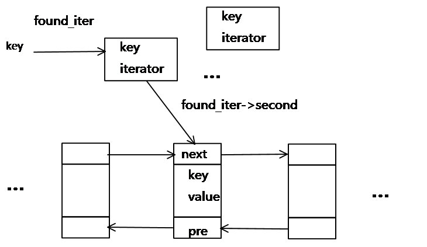

常用数据结构一览
AVL树：应用相对其他数据结构比较少。windows对进程地址空间的管理用到了AVL树
红黑树：广泛用在C++的STL中，如map和set都是用红黑树实现的；Java用它来实现TreeMap；Linux内核在管理vm_area_struct时就是采用了红黑树来维护内存块的；
B/B+树：用在磁盘文件组织 数据索引和数据库索引
双向链表：STL的list，Redis的list
单向链表：STL的slist
链表散列：STL的hash_set，hash_map；Java的HashMap，HashTable
跳表：Redis的Sorted Set
stack、queue默认的底层实现为deque结构
deque：用map管理多个size大小的连续内存块，方便头尾插入
红黑树和散列的比较
权衡三个因素: 查找速度, 数据量, 内存使用，可扩展性。
总体来说，hash查找速度会比红黑树快，而且查找速度基本和数据量大小无关，属于常数级别。但红黑树的查找速度是log(n)级别，并不一定常数就比log(n)小。hash还有hash函数的耗时。
所以STL的map和set用红黑树而不是hash实现
红黑树并不适应所有应用树的领域。如果数据基本上是静态的，那么让他们待在他们能够插入，并且不影响平衡的地方会具有更好的性能。如果数据完全是静态的，例如，做一个哈希表，性能可能会更好一些
首先set，不像map那样是key-value对，它的key与value是相同的。关于set有两种说法，第一个是STL中的set，用的是红黑树；第二个是hash_set，底层用得是hash table。红黑树与hash table最大的不同是，红黑树是有序结构，而hash table不是。但不是说set就不能用hash，如果只是判断set中的元素是否存在，那么hash显然更合适，因为set 的访问操作时间复杂度是log(N)的，而使用hash底层实现的hash_set是近似O(1)的。然而，set应该更加被强调理解为“集合”，而集合所涉及的操作并、交、差等，即STL提供的如交集set_intersection()、并集set_union()、差集set_difference()和对称差集set_symmetric_difference()，都需要进行大量的比较工作，那么使用底层是有序结构的红黑树就十分恰当了，这也是其相对hash结构的优势所在
几个实现例子
Redis的list
用ziplist+quicklist实现的，ziplist压缩空间，quicklist实现链表
LRU的实现
LRU，即最近最少使用页面/缓存替换算法，在web缓存和操作系统中经常被使用。
如果用C++，则使用STL的list+map；如果用Java，则使用双向链表+HashMap；Python则使用双向链表+Dict。使用双向链表可以方便删除节点，使用map来保存每个节点的key-value
- 新数据插入到链表头部
- 每当缓存命中（即缓存数据被访问），则将数据移到链表头部
- 当链表满的时候，将链表尾部的数据丢弃

leetcode的No.146 LRU Cache是关于LRU很好的模拟题。
{kind=link}